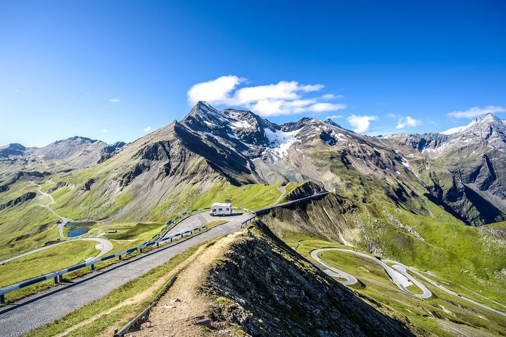

Grossglockner
 Der Großglockner (häufig auch kurz Glockner genannt[1]) ist mit einer Höhe von 3798 m ü. A. der höchste Berg Österreichs. Die markante Spitze aus Gesteinen der Grünschieferfazies gehört zur Glocknergruppe, einer Bergkette im mittleren Teil der Hohen Tauern, und gilt als einer der bedeutendsten Gipfel der Ostalpen. Seit den ersten Erkundungen Ende des 18. Jahrhunderts und der Erstbesteigung durch vier Teilnehmer einer Großexpedition unter der Leitung von Fürstbischof Salm-Reifferscheidt-Krautheim im Jahr 1800 spielte der Großglockner eine wichtige Rolle in der Entwicklung des Alpinismus. Bis heute ist er von großer Bedeutung für den Fremdenverkehr in der Region und mit mehr als 5000 Gipfelbesteigungen pro Jahr ein beliebtes Ziel der Bergsteiger. Der Blick auf den Berg, eines der bekanntesten Wahrzeichen Österreichs, ist die landschaftliche Hauptattraktion der Großglockner-Hochalpenstraße.